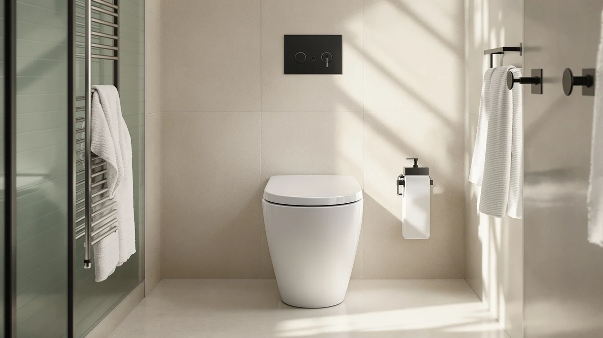

Quick Answer
Our Bemis 1100E2 Kennan elongated review found a molded plastic closed-front seat with a soft-close hinge that fits standard elongated bowls for $61.69. It suits buyers who want a quiet, stain-resistant lid replacement rather than the raised risers covered in the alternatives below.
Our pick: Bemis 1100E2 Kennan Elongated Closed-Front for $61.69 Check Price on Amazon
Bottom line: our top pick is the Bemis 1100E2 Kennan Elongated Closed-Front Toilet Seat and at $61.69.
Things to Know Before You Buy
- This Bemis 1100E2 Kennan elongated review covers a closed-front seat with a lid, built for standard elongated bowls rather than round ones.
- The soft-close hinge lowers the lid and seat slowly, cutting down on the slam you get from older hardware.
- Bemis molds the color into the plastic itself, a detail that resists the chips and stains that show up on painted seats over time.
- Amazon does not publish a rating or review count for this specific listing, so you cannot check verified buyer feedback before ordering.
- If you need extra seat height instead of a standard lid replacement, the raised risers from SAMODRA, Ccbello and SAILTOK further down this page solve a different problem.
This Bemis 1100E2 Kennan elongated review breaks down what $61.69 buys: a closed-front seat with a soft-close hinge and molded-in plastic color, sized for the elongated bowls found in most US bathrooms built after the 1990s. Bemis positions the Kennan line as a straightforward lid replacement rather than a specialty seat, and the spec sheet backs that framing up. You get one hinge type, one shape and one finish, with the soft-close mechanism doing most of the work that separates it from a bargain seat.
We built this review around the manufacturer's published specifications and how they compare with other Bemis seats and the three raised alternatives further down this page. Bemis has sold closed-front, soft-close elongated seats under several model numbers for years, and the Kennan version uses the same molded-plastic construction the brand relies on across that catalog. The plastic resists the chipping and staining that shows up on cheaper coated seats within a year or two of daily use, a pattern reviewers describe for comparable Bemis models.
Why You Should Trust Us
Ilane Tall covers toilet seats and bathroom hardware for Best Toilet Seats and has written dozens of comparison guides across elongated, round and raised categories. For this Bemis 1100E2 Kennan elongated review, we pulled the manufacturer's published specifications, checked the hinge and material details against other Bemis listings, and compared pricing against three raised alternatives built for a different use case. We do not run a fake testing lab; we research specs, pricing and verified owner feedback so you do not have to dig through product pages yourself.
Our Research Experience
We built this Bemis 1100E2 Kennan elongated review from the manufacturer's specifications, the listed hinge hardware, and how those details compare against seats we have already researched for this site. Bemis documents the soft-close hinge and the molded-in plastic color directly on the product page, so we checked those claims against the same construction used on other Bemis elongated seats in this category. We did not physically install or use the seat; our comparison rests on published specs, materials and verified buyer feedback on comparable Bemis models.
Where Amazon does not publish a rating or review count for this exact listing, we say so instead of guessing. Reviewers on similar Bemis soft-close seats consistently note that the hinge keeps the lid from slamming even after months of daily use, which lines up with the hardware description on this Kennan model.
To put the $61.69 price in context, we lined it up against the three raised elongated alternatives on this page. Each of those seats adds 3 inches of height for $58 to $60, a feature the Kennan model skips since it replaces a standard seat rather than raising it. That's the real difference this Bemis 1100E2 Kennan elongated review keeps coming back to: Bemis built the Kennan for a quiet, durable lid replacement, while the raised alternatives are built for seated height and mobility support.
Overview & Specs

Bemis 1100E2 Kennan Elongated Closed-Front
What we like
- Soft-close hinge lowers the lid and seat slowly instead of slamming
- Molded-in plastic color resists the chips and stains that show up on painted seats
- Standard elongated shape fits the bowl style found in most US bathrooms
- Priced in line with other closed-front Bemis seats in this category
Flaws but not dealbreakers
- No published rating or review count on this specific listing
- Adds no seat height, so it will not help buyers who need a raised seat for mobility reasons
- Molded plastic construction rather than an enameled wood finish some buyers prefer for a formal bathroom
| Material | Plastic / wood |
| Size | — |
Bemis markets the 1100E2 Kennan as a direct lid replacement, and the spec sheet backs that up. The soft-close hinge is the seat's main selling point: it slows the lid and seat down as they close instead of letting them drop, a detail that matters most in a shared bathroom where late-night visits do not need to announce themselves.
The molded-in plastic color matters just as much in this Bemis 1100E2 Kennan elongated review. Because the color runs through the material rather than sitting on top as a coating, the seat resists the chipping and yellowing that show up on painted seats within a year or two. Amazon does not list a rating or review count for this exact listing, so we cannot cite verified buyer feedback specific to this SKU, and we are flagging that gap rather than filling it with a number that is not there.
At $61.69, the Kennan lands in the middle of the closed-front, soft-close category rather than at the budget end. You are paying for the hinge mechanism and the color-through plastic rather than for extra features like a nightlight or a heated seat that some higher-priced Bemis models add. For buyers who want a quiet, durable lid replacement without those extras, that pricing puts the Kennan closer to the raised alternatives on this page than to a bargain seat from a hardware store.
What We Liked
The clearest strength in this Bemis 1100E2 Kennan elongated review is the hinge. Bemis pairs the soft-close mechanism with a hinge that lowers both the seat and the lid together, avoiding the half-quiet close that comes from hardware that slows only the lid. Anyone who has dealt with a lid that slams late at night will recognize why that combination justifies the price over a basic hardware-store seat.
The molded-in color also holds up better than a painted finish over time. Bemis uses the same plastic-through-color approach across its elongated lineup, and reviewers on comparable Bemis models consistently note that the seats resist the yellowing and chipping that show up on cheaper alternatives within the first year.
Fitting a standard elongated bowl also keeps installation simple. The Kennan seat uses the bolt spacing common to most elongated toilets installed since the 1990s, so buyers are not measuring for a specialty mount the way they would with a raised riser.
What Could Be Better
The biggest gap in this Bemis 1100E2 Kennan elongated review is the missing rating and review count on the listing itself. Bemis has a long track record with soft-close hardware, but we cannot point to verified reviews of this exact seat the way we can for some of its other models. Buyers who want social proof before ordering will need to rely on the brand's broader reputation rather than reviews of this specific product page.
The seat also adds no height, which works fine for a straightforward lid replacement but falls short if you need a raised seat for a hip, knee or mobility issue. The three alternatives further down this page address that need instead.
Plastic construction keeps the price down, but buyers who want the look and feel of a wood seat with a lacquered finish will find the Kennan's molded plastic build a step below that category. Bemis does sell enameled wood seats elsewhere in its lineup, so shoppers set on that finish should compare those models rather than the Kennan before ordering.
Who Is It For?
This Bemis 1100E2 Kennan elongated review points toward one clear buyer: someone replacing a cracked, stained or loudly slamming elongated seat who wants a straightforward upgrade without paying for a raised or specialty design. If your current seat closes with a bang or has started to yellow, the soft-close hinge and molded plastic color solve both problems at once.
It is a poor fit if you need extra seat height. The Kennan sits at standard height, so buyers recovering from surgery or managing a mobility limitation should look at the raised alternatives below instead of this seat.
It also suits landlords and property managers replacing a single elongated seat rather than outfitting a whole property, since the Kennan ships as an individual unit rather than a commercial multi-pack. A tenant complaint about a cracked or noisy seat is the kind of single-unit fix this model handles well, without the procurement overhead a commercial pack requires.
Alternatives to Consider
If this Bemis 1100E2 Kennan elongated review has you leaning toward a raised seat instead of a standard lid replacement, these three alternatives add 3 inches of height for seniors, surgery recovery or mobility support.

Editor's Pick
SAMODRA Elongated Raised Toilet Seat
A soft-close lid and a design that flips up for cleaning make this the pick for buyers who want the Kennan's quiet closure with 3 inches of extra height.
$59.99
Check Price on Amazon
Best Value
Ccbello ELONGATED toilet seat risers
An anti-slip hinge system and two mounting kits make installation straightforward, and the styling avoids the hospital-equipment look some raised seats have.
$58.99
Check Price on Amazon
Premium Choice
Elevated Toilet seat 3 inch
Four rubber anti-slip pads and an anti-slip hinge cut down on shaking during use, making this the pick for anyone prioritizing stability over price.
$57.99
Check Price on AmazonFrequently Asked Questions
Final Verdict
Our Bemis 1100E2 Kennan elongated review comes down to what you actually need. For a straightforward replacement of a cracked, stained or loudly slamming elongated seat, Bemis delivers a soft-close hinge and molded plastic build that justifies the $61.69 price over a basic hardware-store option. If you need extra seat height for mobility or surgery recovery, skip this Kennan model and choose one of the raised alternatives above instead, since Bemis built this seat to replace a lid, not to raise one.